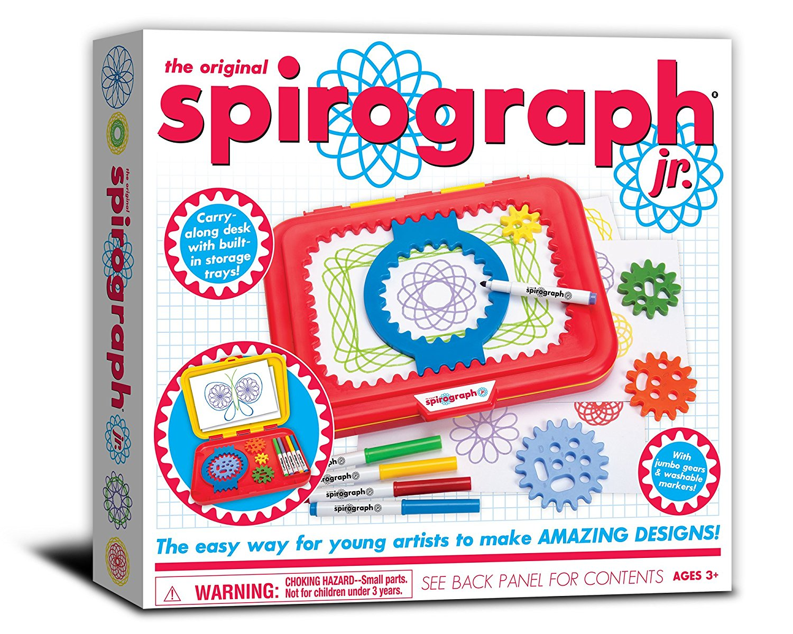

It's Spirograph which is a mathematical feat that couldn't be described as anything other than exceptional. Our product creates beautiful abstract designs using roulette curves that can be done automatically! No manal labour required!
The toy is based on a mathematical tool used for calculating an area delimited by curves, which was created by Bruno Abakanowicz between 1881-1900. It wasn’t commercialized until 1908 where an outdated version of a spirograph called “The Marvellous Wondergraph” appeared in a Sears catalog.
The official Spirograph was developed by the British engineer Denys Fisher, where it was first shown off at the 1965 Nuremberg International Toy Fair. The product you will most likely see today on store shelves is the Spirograph from Kahootz Toys, which was even a Toy of the Year finalist in 2014!
Kyle Newbigging: Head Coder/Assistant Builder
Riley Roberts: Head of Construction
Matthew Hohner: Chief of Documentation (CEO) (COO) (P.H.D.) (C.F.A) (C.P.A) (M.B.A) (M.D.) (D.D.S)